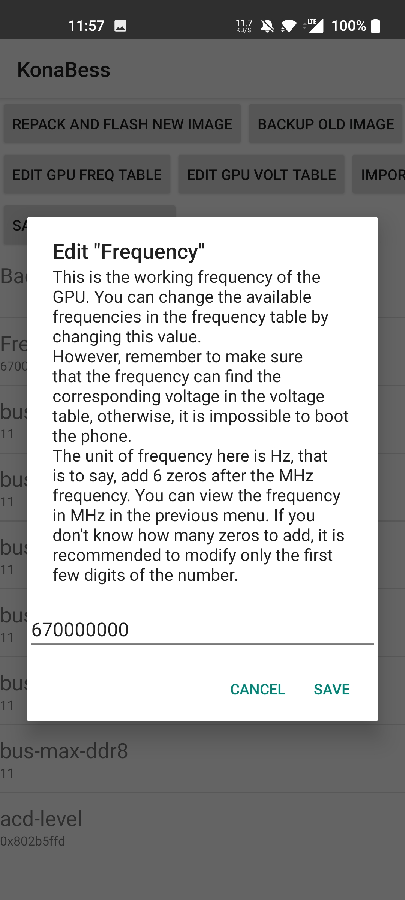
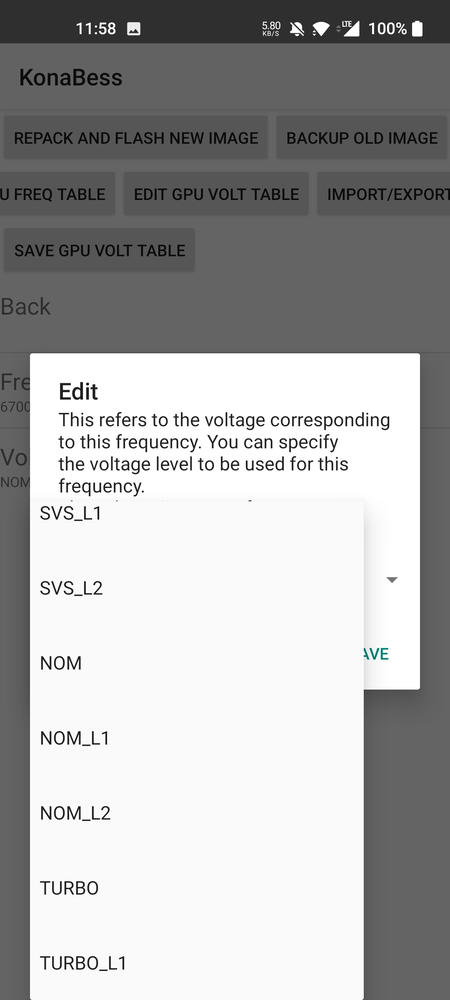

KonaBess 快问快答：驯龙党人手一份的 GPU 调校神器
KonaBess 是做什么的？怎么用？降压超频怎么玩才安全？常见不稳定信号怎么快速回退？这篇把驯龙路上最常问的九个问题一次讲透。
开头：整理一篇关于 KonaBess 的快问快答
骁龙 888 发热烫手、8 Gen 1 温控锁帧、老机型性能天花板够不着——这些"驯龙"场景里，KonaBess 几乎是圈内人最熟的名字。但第一次接触它的人疑问也挺多：这东西到底安全不安全？降压和超频先搞哪个？花屏了怎么办？下面把最常被问的九个问题一次说清。
1. KonaBess 到底是什么？
一句话：一个修改 Android 设备 dtb 中 GPU 频率表和电压表的工具。它把原厂给 GPU 写死的频率档位和对应电压值读出来，允许你逐档调整，然后重新打包 boot.img 刷回去。本质上是在硬件允许的范围内重新定义 GPU 的功耗-性能曲线。
它不是游戏加速器、不是温控插件、不跑在应用层——修改发生在 boot 镜像里，内核直接读你改好的数值。所以调校效果是系统级的，覆盖所有场景。它的KonaBess官网上把这些核心概念讲得更清楚。

2. 哪些人最需要它？
两类人最典型。第一类是手里攥着骁龙 888、8 Gen 1 这两代"火龙"的用户——保守降压 30~40mV 就能显著缓解温控压力，风险极低，几乎是刚需。第二类是想榨干老机型性能的玩家，比如骁龙 865、778G 超频 100MHz 后在 3D 游戏里能多出几帧。
如果你用的是温控本来就不错的芯片（比如骁龙 7+ Gen 2 以后的中高端），或者对刷机、fastboot 操作完全陌生，那暂时没必要碰——收益不大，操作门槛反而让人劝退。
3. 怎么装？要不要 root？
不需要 root，但需要解锁 bootloader。这是两个概念：解锁 bootloader 是让设备允许你刷入自定义 boot.img，KonaBess 修改完 dtb 后打包出的镜像就是通过 fastboot 刷回去的。root 权限它用不上，因为 dtb 的读写走的是内核节点，不走应用层。
安装包从官方下载拿，社区也有镜像，直接下就行。装完 App 打开，第一次使用它会提示你授权 fastboot 相关操作，跟着走。
4. 降压和超频，先搞哪个？
永远先降压，稳定了再考虑超频。降压是减功耗减发热，风险最低，收益最稳——保守 30mV 降压在骁龙 888 上就能把温控压力砍一半，性能几乎不降。超频是加功耗加发热，每加 50MHz 功耗上涨 15~20%，温控压力反而更大，适合降压稳定后还想再冲性能的玩家。
实操路线：Level 1 保守降压（均匀 -30mV）→ 刷入测试一周 → 稳定了再试 Level 2 非均匀降压（低压档多压、高压档保守）→ 彻底稳了再碰超频。

5. 降压具体怎么操作？五个步骤走完
第一步，导出原厂配置。改之前必须导一份，永远有退路。命名建议带上芯片型号、日期和调校内容，比如 konabess_sm8350_20261014_stock.json。
第二步，从保守值开始。先试均匀 -30mV，不要一上来就激进降压。
第三步，刷入重启，等热管理稳定 3~5 分钟，然后跑 3DMark Wild Life、打一两局常玩的 3D 游戏，观察有没有花屏、闪屏、闪退。
第四步，通过 → 存档；失败 → 导入上一份稳定配置重刷。
第五步，稳定一周后再考虑加深降压幅度。
6. 不稳定信号怎么快速诊断？
从轻到重排，对应不同的处理策略：
- 花屏 / 闪屏：最轻。几乎都是高压档降压太激进，给高压档加回 20~30mV 就行。
- 游戏闪退：GPU 驱动检测到错误后强制退出，根因和花屏一样，还是高压档电压不够。
- 系统直接重启：GPU 驱动崩溃导致内核 panic，通常是超频太激进或电压完全不够。此时别微调了，直接 fastboot 刷回原始备份的 boot.img。
- bootloop：最严重，dtb 修改导致内核无法初始化 GPU。立刻 fastboot 刷回原始 boot.img，没有第二个选项。
一个容易忽略的信号：锁屏唤醒后黑屏——这是最低档电压太低，GPU 从最低档往上跳时电压不够，把最低档和次低档加回 20mV 就能解决。拿不准的信号可以翻KonaBess文档，社区整理的速查表很全。
7. 超频安全范围大概在哪里？
社区经验值可以参考，但最终取决于你的芯片体质：
| 芯片 | 原厂峰值 | 典型超频范围 |
|---|---|---|
| 骁龙 888 | 840 MHz | +50~150 MHz |
| 骁龙 8 Gen 2 | 1000 MHz | +100~200 MHz |
| 骁龙 865 | 675 MHz | +100~200 MHz |
超频必须同步加压——每 +50MHz 通常需要 +20~30mV。测试一定要跑 3DMark Wild Life Extreme Stress Test 20 轮，不能靠"打了一局王者没事"就过关。

8. 配置导出导入有什么坑？
三个注意点：第一，同型号同芯片可以互相导入，但跨芯片绝对不行——骁龙 888 的 dtb 结构和 865 完全不同，即使频率数值看起来相近，导入大概率崩。第二，导入只是加载到内存，不会自动刷入，导入后还是要 Repack 和刷入。第三，调校前的原厂备份必须单独存好，以后换 ROM、刷机出问题都靠它回退。
9. 最后一句：值不值得装？
手里有火龙芯片、愿意花一小时解锁 bootloader、能接受偶尔回退的玩家——装，降压 30mV 就能获得一整个夏天的清凉日常。对刷机没经验、用的是温控本就不错的新机型——先别碰，收益不值那门槛。
文档维护和资源分发不止一处有备份，社区资料在GitHub、Gitee、GitCode三个仓库都能拿到，不怕单一地址失效。